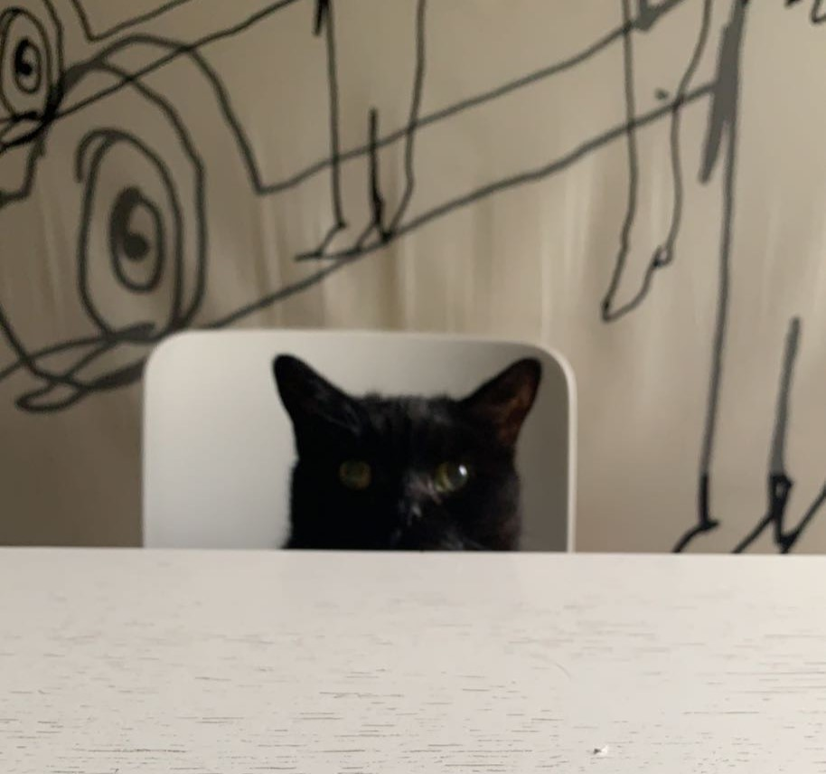

Harriet.
2010-2022

Harriet came into my life as a bit of a surprise blessing when I began university in 2021. I moved in with a family friend who’s parents had vacated their room while they built a new house, and so I took their space. Along with the room, came a little black cat, old, but friendly. I am severely allergic to cats, and my parents suggested I figure out a way to get Harriet out of my space, but her sweet face and nightly cuddles convinced me otherwise.My time with her was short, as she passed away within the year I moved in, but her effect everlasting. She was a pure soul.
